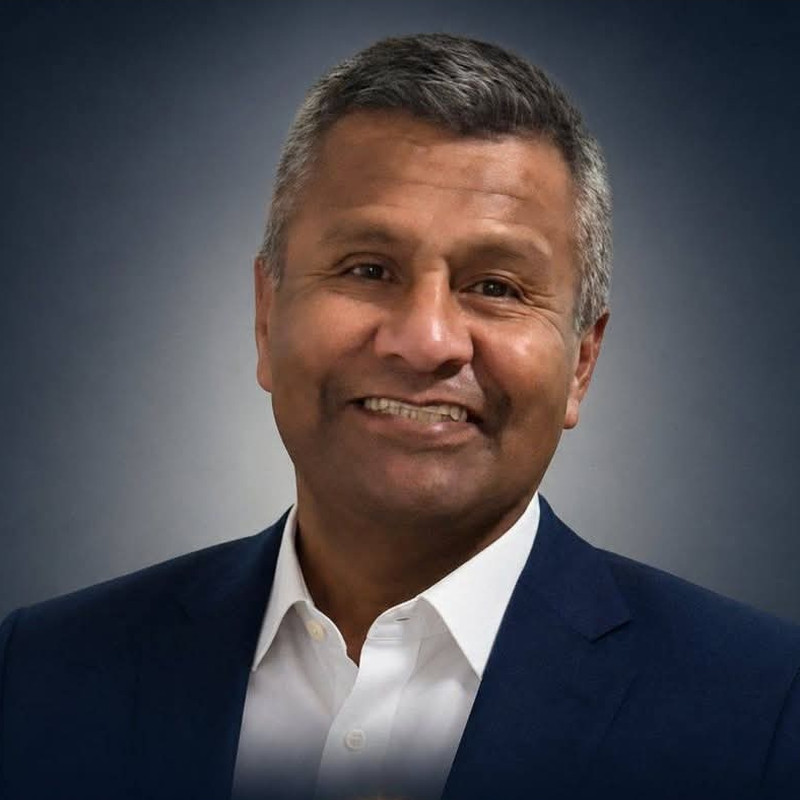

¿Tuvo un accidente de auto en Utah? Encuentre un abogado de lesiones participante en Utah que usted elija.
Cuéntenos qué pasó y le podemos presentar a un abogado independiente en Utah. Somos un servicio de publicidad e información, no un bufete de abogados.
Usted se recupera.
Nosotros hacemos la presentación.
El primer paso para conocer a un abogado independiente
Después de un accidente automovilístico es normal no saber a quién llamar. Nosotros escuchamos su situación y le presentamos a un abogado independiente que atiende casos de accidentes de auto en Utah. Usted decide si lo contrata.
Cómo funciona
Tres pasos sencillos, sin compromiso.
Presente su situación
Llene el formulario con lo básico de su accidente.
Usted elige quién le contacta
Si usted lo pide, podemos compartir su información con un abogado independiente participante en Utah. Usted decide si habla con ese abogado.
Hable con el abogado
El abogado revisa su caso y le explica sus opciones.
Lesiones personales
Esta es información general solo para personas en Utah. Best Legal Net es un servicio de publicidad e información, no un bufete de abogados. Esta lista no es asesoría legal.
- Accidentes de auto
- Accidentes de camión
- Accidentes de motocicleta
- Accidentes de peatones
- Accidentes de bicicleta
- Accidentes en transporte compartido (rideshare)
- Caídas en lugares públicos (tiendas, estacionamientos, aceras)
- Mordedura de perro
Por ahora atendemos solo en Utah.
Envíe un formulario para que le conecten con un abogado participante en Utah que usted elija.
Sobre Best Legal Net
Un servicio de publicidad e información con un solo propósito: ayudarle a llegar a un abogado independiente con menos estrés.
Información clara, sin presión
Ayudamos a las personas lesionadas en accidentes de auto en Utah a encontrar a un abogado independiente. Le escuchamos, le explicamos cómo funciona el servicio y hacemos la presentación, sin presionarle a tomar ninguna decisión.
Ayuda al alcance de todos en Utah
Imaginamos un Utah donde cualquier persona que haya tenido un accidente pueda conectarse rápidamente, en inglés o en español, y elegir su propio siguiente paso con confianza.
Lo que nos guía
- Compasión. Cada llamada importa, y la tratamos así.
- Honestidad. Somos claros sobre lo que hacemos y lo que no hacemos.
- Su decisión. Contratar a un abogado siempre depende de usted.
- Atención bilingüe. Ayuda en español y en inglés.
- Integridad. Hacemos lo correcto, siempre.
Nuestro equipo
Las personas detrás de nuestro servicio de publicidad e información. No somos abogados; le conectamos con ellos.

Hayser Barrera
Especialista en atención al cliente
Hayser es especialista en atención al cliente y ayuda a las personas a usar este servicio de publicidad e información después de un accidente.

Luis H. Barrera
Agente de marketing
Luis es agente de marketing de Best Legal Net.

Jackie Barrera
Especialista en atención al cliente
Jackie es especialista en atención al cliente y suele ser la primera voz que usted escucha. Explica cómo funciona este servicio y no es abogada.
Janet Rodriguez
Coordinadora de clientes
Janet es coordinadora de clientes y ayuda con formularios y citas hasta la presentación con un abogado independiente. Best Legal Net no tramita su asunto legal.
Escríbanos por WhatsApp
Elija un mensaje para iniciar la conversación. Se abrirá WhatsApp con el texto listo para enviar.
WhatsApp: (385) 490-6607
Tuve un accidente de auto
"Hola, tuve un accidente de auto en Utah y me gustaría que me ayuden a encontrar un abogado."
Abrir en WhatsAppEscribo por un familiar
"Hola, le escribo por un familiar que se lesionó en un accidente de auto en Utah."
Abrir en WhatsAppPreguntas frecuentes
Sobre Best Legal Net
¿Son ustedes un bufete de abogados?
No. Best Legal Net es un servicio de publicidad e información. Le podemos presentar a abogados independientes, y ellos brindan la ayuda legal.
¿Tengo que contratar a algún abogado?
No. Usted es libre de contratar a cualquier abogado o a ninguno.
¿Puedo llamar por un familiar?
Sí. Los familiares pueden comunicarse en nombre de un ser querido.
¿Puedo recibir ayuda en inglés?
Sí. Visite nuestra página en inglés para comunicarse en inglés.
¿En qué partes de Utah ofrecen servicio?
Ayudamos a personas en todo Utah.
Sobre su caso
¿Puede Best Legal Net decirme si tengo un caso?
No. Best Legal Net es un servicio de publicidad e información, no un bufete de abogados, y no puede decirle si usted tiene un caso. Solo un abogado con licencia en Utah que revise los hechos puede hacerlo.
¿Debería presentar un reclamo si no siento dolor de inmediato?
Después de un accidente, su cuerpo puede entrar en estado de shock y liberar adrenalina, lo que puede ocultar el dolor por completo. Las lesiones graves, como el esguince cervical (whiplash), las conmociones cerebrales o las hemorragias internas, a menudo no duelen hasta días después. Vaya a un médico de inmediato para proteger su salud. La atención médica oportuna también crea registros que pueden importar más adelante. Un abogado puede aconsejarle sobre si corresponde presentar un reclamo y cuándo hacerlo.
Costos y valor del caso
¿Cuánto vale mi caso?
Best Legal Net no puede decirle cuánto vale un caso y no hace estimaciones. Un abogado con licencia en Utah puede revisar sus registros y hablar de ello con usted.
¿Cuánto cuesta?
Best Legal Net es un servicio de publicidad e información, no un bufete de abogados. Un abogado con licencia que usted elija le explicará sus propios honorarios antes de que usted decida si lo contrata.
El proceso legal y los plazos
¿Cuánto tiempo tengo para presentar una demanda?
Los plazos dependen de los hechos y pueden ser cortos. Best Legal Net no puede decirle qué plazo aplica a su situación. Consulte pronto a un abogado con licencia en Utah.
¿Tendré que ir a la corte?
Muchos casos de lesiones personales se resuelven sin un juicio. Un juicio puede ser necesario si la compañía de seguros no ofrece una resolución justa. El abogado de su caso se encargaría de ese proceso.
¿Cuánto tiempo tardará un caso?
Best Legal Net no puede predecir plazos. Un abogado con licencia en Utah puede hablar del proceso después de revisar los hechos. Nosotros no aconsejamos a nadie aceptar o rechazar un acuerdo.
Después de un accidente
¿Qué debo hacer inmediatamente después de un accidente?
- Busque atención médica de inmediato.
- Llame a la policía y pida que presenten un informe oficial del accidente.
- Tome fotos y videos de la escena, los autos, cualquier peligro y sus lesiones.
- Intercambie datos de contacto y de seguro con todos los involucrados.
¿Qué debo decir si me llama la compañía de seguros del otro conductor?
Best Legal Net no puede decirle qué decirle a un asegurador y no es su abogado. Usted puede decir que no es abogado, que Best Legal Net es solo un servicio de publicidad e información, y que un abogado con licencia puede comunicarse con ellos si usted lo contrata. Para consejo sobre declaraciones grabadas o culpa, consulte a un abogado con licencia en Utah.
El seguro de auto en Utah
¿Cómo funciona el seguro de auto en Utah después de un choque?
Utah tiene reglas detalladas de seguro, incluida la protección contra lesiones personales. Best Legal Net no puede decirle cómo esas reglas aplican a usted. Consulte a un abogado con licencia en Utah, y a su aseguradora, sobre su cobertura.
¿Subirá el precio de mi seguro?
Best Legal Net no puede decirle cómo una aseguradora fijará su prima. Pregunte a su aseguradora, o a un abogado con licencia en Utah, sobre su situación.
Documentos que debe reunir
¿Qué documentos debo reunir?
Si los tiene, estos elementos pueden ayudar a un abogado con licencia a revisar su situación:
- Registros del accidente y de las autoridades
- El informe policial o el formulario de intercambio de información que le entregó el oficial en la escena
- El nombre, número de placa y departamento del oficial si no obtuvo una copia completa del informe
- Cualquier multa o citación de tránsito emitida al otro conductor en la escena
- Fotos y evidencia de la escena
- Fotos o videos de la escena, incluida la posición de los vehículos, marcas de frenado, señales de tránsito, clima o peligros en la carretera
- Fotos de cerca y amplias de los daños a su vehículo, el interior o su propiedad personal
- Fotos claras de sus lesiones desde el día del accidente a lo largo de su recuperación
- Seguro e identificación
- La página de declaración de su seguro de auto o un desglose que muestre su cobertura, incluida la protección contra lesiones personales (PIP)
- Los datos de contacto y de seguro del otro conductor
- Los datos de su tarjeta de seguro médico, que pueden ayudar con las facturas médicas mientras avanza el reclamo
- Registros médicos e impacto financiero
- Registros de emergencias o cuidado urgente, como documentos de alta o instrucciones de su primera visita
- Facturas médicas y recibos de hospitales, terapeutas físicos, quiroprácticos o farmacias
- Comprobante de pérdida de ingresos, como talones de pago recientes o registros de calendario de las horas que perdió por visitas médicas o días de recuperación
La información de esta sección es solo para fines informativos generales. No constituye asesoramiento legal ni médico. Best Legal Net es un servicio de publicidad e información, no un bufete de abogados, y no ofrece asesoría legal. Hable con un abogado con licencia sobre los requisitos específicos de su caso.
Cuéntenos qué pasó
Teléfono y correo electrónico próximamente.